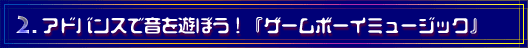
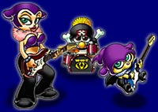

|  |
| ------------------------------------------------------------------------- |
| −−キャラクターと音楽は、どうやって組み合わせていったんですか。 |
| 谷口 作業としてはまったく別なので、並行して走っていたんですけど、キャラクターのもつ世界観みたいなものとあわせて選曲していかなくちゃいけないので、その点は「ダークな感じ」とか「ハードコアな感じ」といった北村の難解な注文に対して、そのときそのときで、感覚をすりあわせていきました。 中塚 キャラクターが、「ライブハウスを中心に活動しているハードロック系バンド」という設定なんです。これはアートディレクターの北村の意向なんですよ。みんなの趣味にわりとあっていたので、あまり無理せずできました。 |
| −−じゃあ、みなさん、音楽は好きだったんですか。 |
| 谷口 そうですね。 |
| −−谷口さんもなにか音楽をやっていたんですか？ |
| 谷口 えっ・・ええ、ブルースバンドでドラムを少しやっていました。ただ、今回のプロジェクトは、特に音楽好きのスタッフを集めたというわけではないんですよ。プロジェクトが始まったときに、たまたまみんな音楽好きだったんです。僕らには、社内のほかの部署やライセンシーさんみたいに、手塩をかけて磨き上げた「ゲーム性で勝負」というような経験がないと思ったものですから、無理をしないで新しいことをやろうというところで、企画が始まったんです。特に音楽に執着していたというわけではないんですけど、基本的には全員音楽好きだったので、やりやすかったですね。 |
| −−ゲームはステージ構成になっているんでしょうか。 |
| 谷口 練習が必要なので、ゲーム性をもたせた仕立てにしてあります。それが、「ゲーム演奏モード」です。それと、実際に好きな曲を自由に弾ける「楽器演奏モード」があります。 |
| 中塚 「ゲーム演奏モード」では、１つのキー操作でフレーズも弾けるんですよ。だから比較的簡単に演奏できます。それに対して「楽器演奏モード」は１つのキー操作で１音しか出ない、いわゆる通常の楽器と似た扱いになるので少し難しいんです。そこで「ゲーム演奏モード」で練習をしてから「楽器演奏モード」を遊んでもらおうと考えています。この「ゲーム演奏モード」は、ハードロックを中心に、パンク風、ロックンロール風、ファンク風、リズム＆ブルース風等々といったアレンジが入っていますし、曲のテンポも途中で変化します。いろいろと工夫してありますから、十分楽しんでもらえると思いますよ。オリジナルで２５曲ほど用意しています。 |
| −−難易度の設定もしてあるんですか。 |
| 中塚 ええ。テンポが速くなったり、ボタンを押す回数が増えたり、押すタイミングが複雑になったりと、だんだん難しくなっていくようにしています。またレベルが上がると、ソロがプレイできるようになっていくんですよ。 |
| −−どういった手順で作曲をしていったんでしょう？ |
| 中塚 元々ハードロックが中心ということは決まっていましたが、考える段階ではまったく絵も歌詞も無かったので、こちらのほうで勝手に想像して作っていったんですよ。 最初にある程度叩き台をつくって、アートディレクターの北村にキーボードやギターで１曲１曲弾いて聞かせて、意見を聞いていきました。そのあとでシーケンサーソフトを使ってドラムやベースを打ちこみ、それに手弾きでギターを入れて、もう一度聞いてもらったんです。いわゆる仮録音というやつですね。この段階で曲のイメージは決まってしまうので、ここで周囲のスタッフに意見を聞いてＯＫということであれば、そこから具体的な作業に入っていきます。難易度の調整はその後です。 |
| −−曲は鍵盤楽器で作るんですか。 |
| 中塚 一番得意なのは鍵盤なんですけど、今回はハードロックということなので、自分でエレキギターを弾いて、それをとりこんで仮オケを作りました。ギターは趣味でやっていたので。 |
| −−そこからゲーム機に移すには、どんな作業があるんでしょう。 |
| 中塚 「ゲーム演奏モード」に関して言うなら、まずパソコン上で仮オケのＭＩＤＩデータを修正（調整）します。次にギターの音（フレーズ）を素材毎にサンプリングしていくんです。それを編集し、キーの割り振りを考え、難易度を調整してからリンクします。そこまでの作業は、全部１人でやりましたね。 |
| −−とりこんだ音は機械上で加工したりするんですか。 |
| 中塚 もちろんします。でも一番難しかったのは、通常の曲作りと違って、使いまわしができるフレーズを作らなくてはいけないことですね。例えば16小節のソロがあったとしたら、普通のミュージシャンならメモリー効率を考えずにベタでソロを弾くだけですけど、こういう仕事の場合はメモリの制約があるんですよ。例えばトータルで４小節分の波形データでも16小節の演奏ができるとか、そういった曲作りが求められます。それを考えるのが一番難しかったですね。 |
| −−なるほど。好き勝手に曲を作ると、だいたいメモリが足りなくなってしまうものなのですか。 |
| 中塚 でも、あまり意識しすぎるとカチカチの曲になってしまうので、最初は意識しないようにしています。ある程度形になってからどうしようかと考えて、作り直していくんです。 |